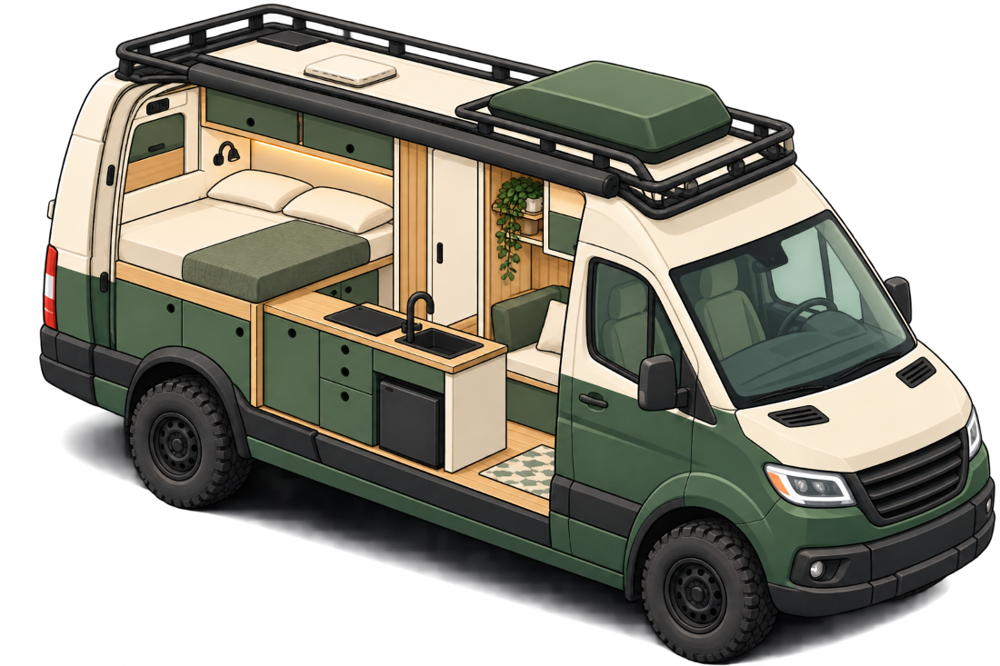
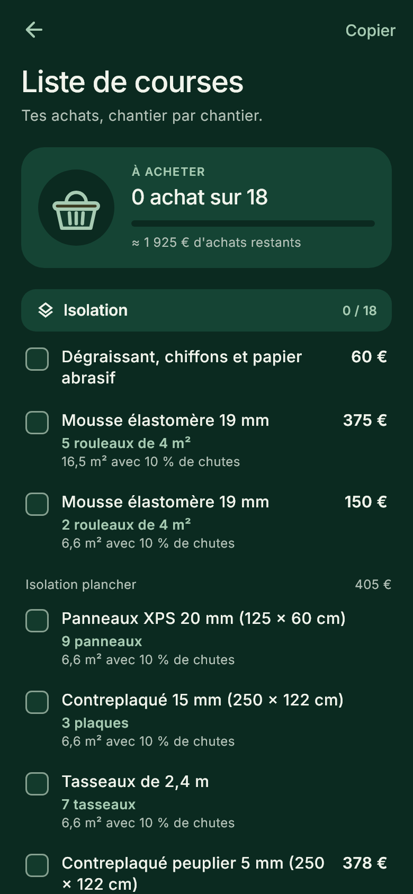

L'app des vanlifers qui aménagent
Aménage ton van sans te tromper de budget.
Van'Up chiffre ton aménagement chantier par chantier, à partir de ton van et de ta façon de voyager. Puis elle t'accompagne sur la route : entretien, réserves d'eau et d'énergie, dépenses.
- Android
- En français
- Fonctionne hors ligne
- Sans compte

Du premier devis à la route
Trois moments de la vie d'un van aménagé, et une seule app pour les suivre.
1. Chiffrer
Cinq chantiers, une estimation qui s'explique
Tu réponds à des questions simples sur ton van et ton usage. L'app calcule chaque poste et te dit d'où vient chaque montant.
- Isolation, électricité, eau, chauffage, mobilier, et les petits objets de la vie à bord.
- Des fourchettes de prix, jamais un chiffre magique, et les postes qu'on oublie toujours : chutes, ossature, outillage, imprévus.
- Le temps de chantier et le poids ajouté, face à la charge utile de ton van.
- Pas envie de tout choisir ? « L'app choisit pour moi » propose trois configurations à ton budget, sans jamais rogner sur la sécurité.
- Pas encore de van ? Le budget se décline pour un petit van, un fourgon moyen et un grand fourgon.

2. Acheter
Ta liste de courses, quantités comprises
Chaque choix devient du matériel à acheter, compté en rouleaux, en plaques ou en tasseaux, chutes comprises. Tu coches au fil des achats, et le Journal compare ce que tu dépenses vraiment au prévu.
- Les quantités calculées pour les surfaces de ton van.
- Ton propre matériel ajouté en deux gestes, avec son prix.
- Le tri par magasin et les liens vers les produits des enseignes Bientôt

3. Rouler
L'entretien et l'autonomie, sans réseau
Une fois le van sur la route, l'app suit ce qui doit l'être, même au fond d'une vallée. Elle sert aussi à qui a déjà un van aménagé.
- Un carnet d'entretien selon ton équipement : vidange, courroie, pneus, contrôle technique, panneaux solaires, chauffage, flexible de gaz… Chaque intervalle cite sa source.
- Des rappels sur ton téléphone, « Fait aujourd'hui » en un geste, et les photos de tes factures.
- Eau, batterie, gaz : tu notes tes pleins et tes niveaux, l'app apprend ta consommation et t'indique combien de jours il te reste.
- À deux dans le van ? Un compte facultatif partage le même van, le même projet et les mêmes dépenses.

Ce qu'on s'interdit
Les chiffres inventés
Un montant se calcule ou ne s'affiche pas. Les prix sont datés.
Le chiffre unique
Un aménagement n'a jamais un seul prix : tout est en fourchette.
Le réseau obligatoire
L'essentiel marche hors ligne, là où le van se trouve vraiment.
Le compte obligatoire
Tes données restent sur ton téléphone. Le compte ne sert qu'à partager.

Gaston te fait visiter
À la première ouverture, Gaston, la mascotte de Van'Up, te montre où tout se trouve. Il revient quand tu ouvres ton projet pour la première fois.
« Salut, moi c'est Gaston ! »
Pour les enseignes et les marques
Chaque utilisateur de Van'Up repart avec une liste de matériel précise, calculée pour son van : isolants, bois, électricité, eau, chauffage, mobilier, équipement de plein air.
Ce sont des achats concrets, à des moments précis du projet.
La prochaine étape de l'app est de relier chaque article de cette liste aux produits des enseignes de bricolage, de sport, d'automobile et d'ameublement, et d'indiquer le magasin le plus proche.
Van'Up est en développement et sera publiée sur Google Play.